Labware¶
We spend a fair amount of time organizing and counting wells when writing Python protocols. This section describes the different ways we can access wells and groups of wells.
Labware Library¶
The Opentrons API comes with many common labware built in. These can be loaded into you Python protocol using the labware.load() method, and the specific name of the labware you need.
Under the Opentrons Labware are a list of some of the most commonly used labware in the API, as well as images for how they look.
If you are interested in using your own labware that is not included in the API, please take a look at how to create custom labware definitions using labware.create(), or contact Opentrons Support.
Note
All names are case-sensitive, copying and pasting from this list into the protocol editor will ensure no errors are made.
Note
We are in the process of revising the labware definitions used on the OT2. Documentation for previously existing definitions is left over from OT1, and is incomplete. Check out this webpage to see a visualization of all the API’s legacy built-in labware definitions. For JSON protocols and APIv4 protocols, see the visualizations and descriptions under Opentrons Labware.
Placing labware on the robot deck¶
The robot deck is made up of slots labeled 1, 2, 3, 4, and so on.
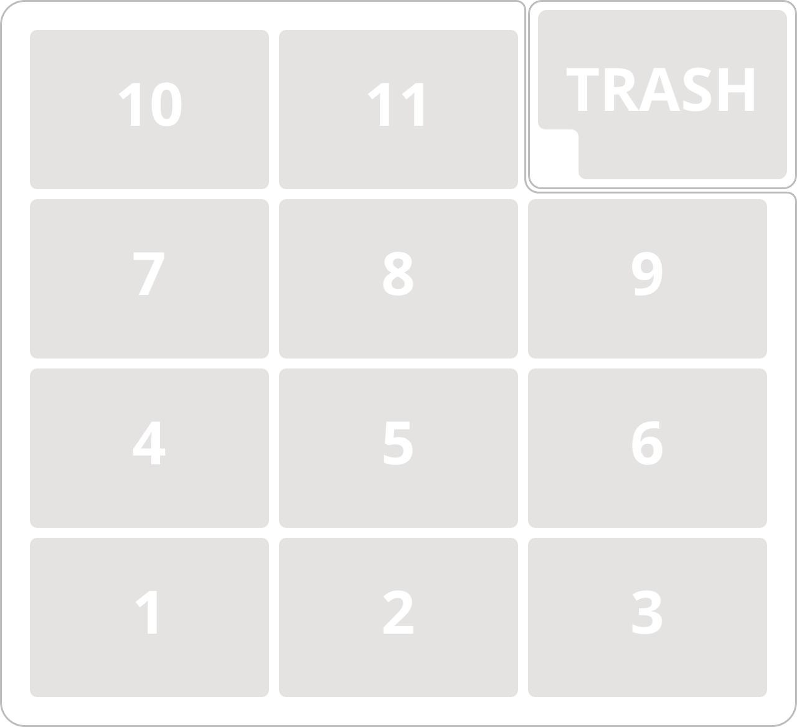To tell the robot what labware will be on the deck for your protocol, use labware.load after importing labware as follows:
from opentrons import labware
samples_rack = labware.load('tube-rack-2ml', slot='1')
Opentrons Labware¶
Tipracks¶
opentrons-tiprack-300ul¶
Tiprack for both a 50ul and 300ul pipette (single or 8-channel)
labware.load('opentrons-tiprack-300ul', slot)
Accessing Tips: single channel ['A1']-['H12'], 8-channel ['A1']-['A12']
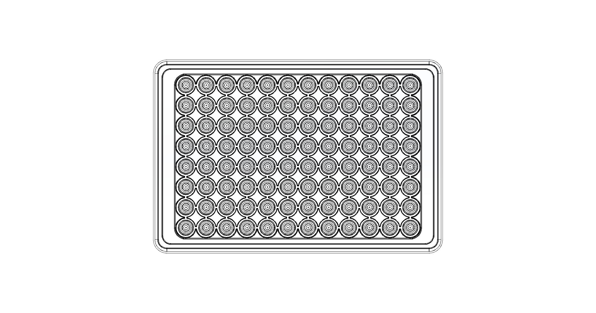 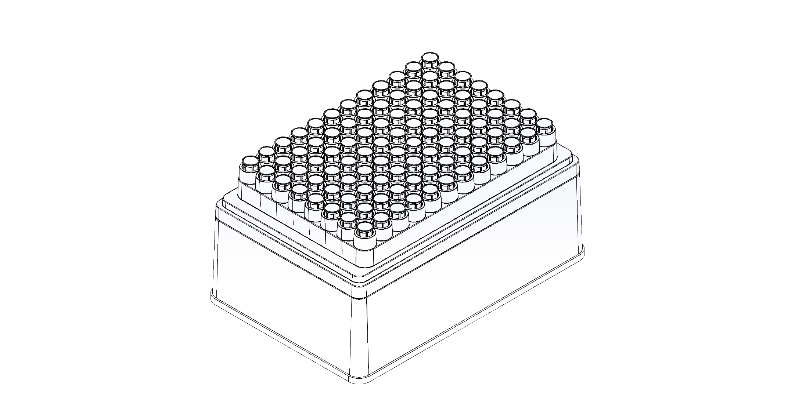
Aluminum Blocks¶
Aluminum blocks are typically paired with a temperature module. Can also be used as a standalone container.
opentrons-aluminum-block-2ml-eppendorf¶
A 2ml tube holder, specifically based off of eppendorf snapcap tubes.
labware.load('opentrons-aluminum-block-2ml-eppendorf', slot)
Accessing Wells: single channel ['A1']-['D6']
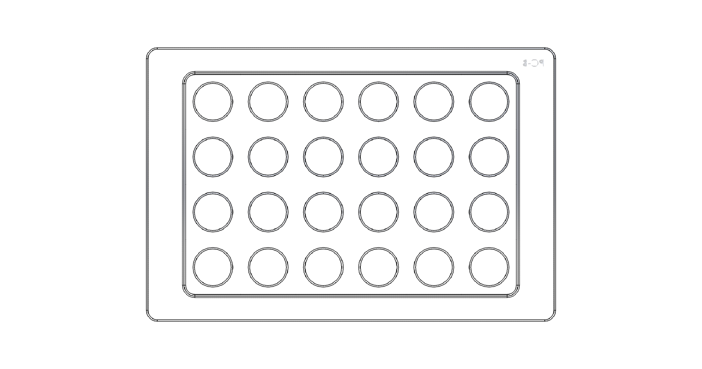 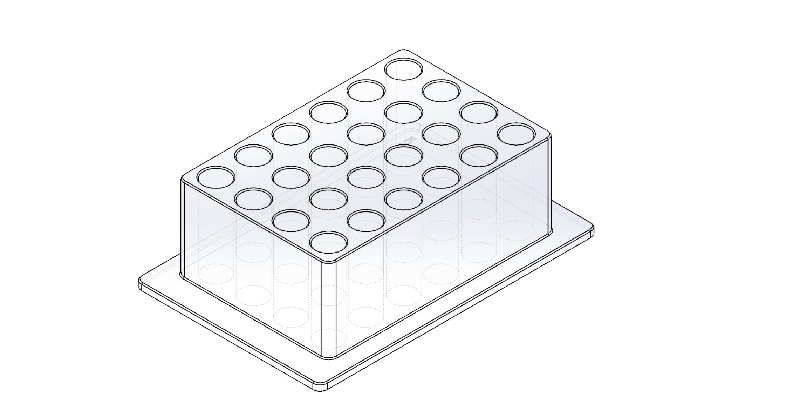
opentrons-aluminum-block-2ml-screwcap¶
A 2ml tube holder, specifically based off of screwcap tubes
labware.load('opentrons-aluminum-block-2ml-screwcap', slot)
Accessing Wells: single channel ['A1']-['D6']
opentrons-aluminum-block-96-PCR-plate¶
A flat plate which acts as an adaptor for a well plate. This particular definition is modeled after the 96-well biorad hardshell plate.
labware.load('opentrons-aluminum-block-96-PCR-plate', slot)
Accessing Wells: single channel ['A1']-['H12'], 8-channel ['A1']-['A12']
opentrons-aluminum-block-PCR-strips-200ul¶
A 96 well adaptor meant to hold 96 PCR strips with 200ul max volume.
labware.load('opentrons-aluminum-block-PCR-strips-200ul', slot)
Accessing Wells: single channel ['A1']-['H12'], 8-channel ['A1']-['A12']
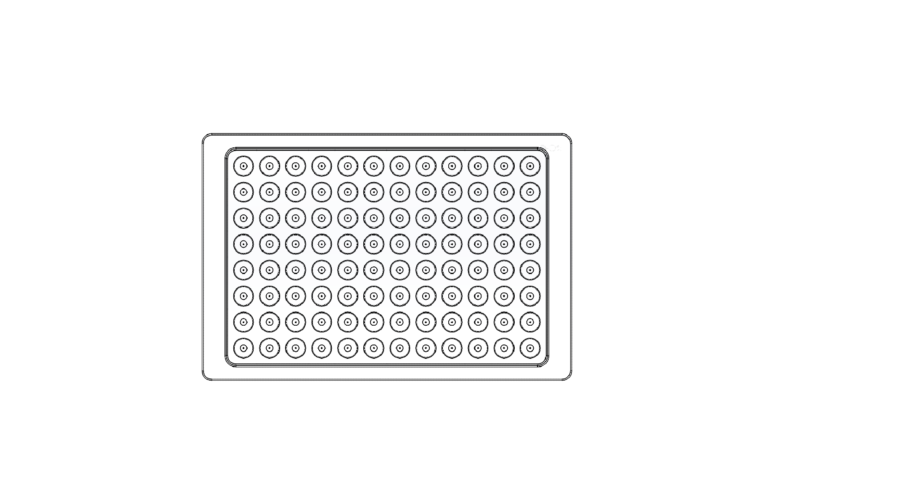 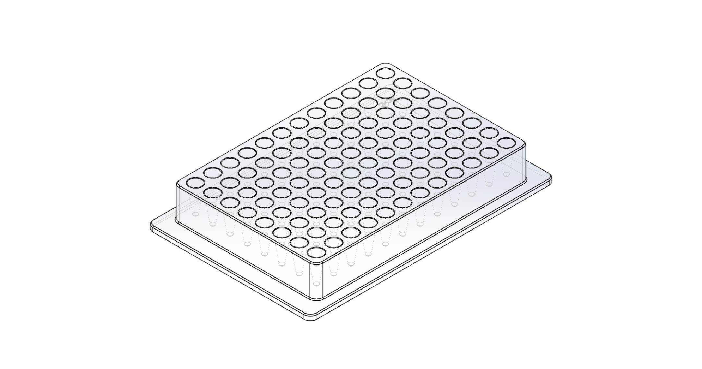
Modular Tuberack¶
opentrons-tuberack-2ml-eppendorf¶
This tuberack insert definition is for snapcap tubes ranging from 2-5ml.
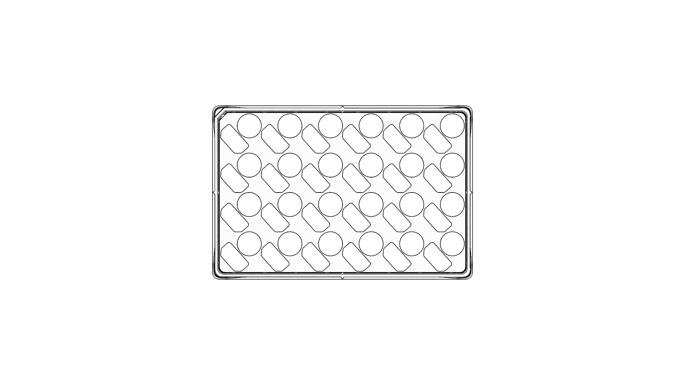 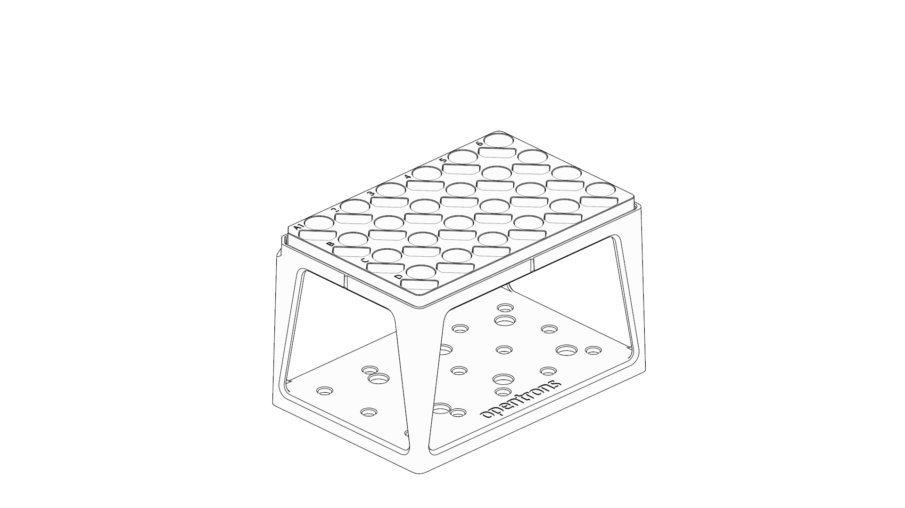
opentrons-tuberack-2ml-screwcap¶
This tuberack insert definition is for screwcap tubes ranging from 2-5ml.
opentrons-tuberack-15ml¶
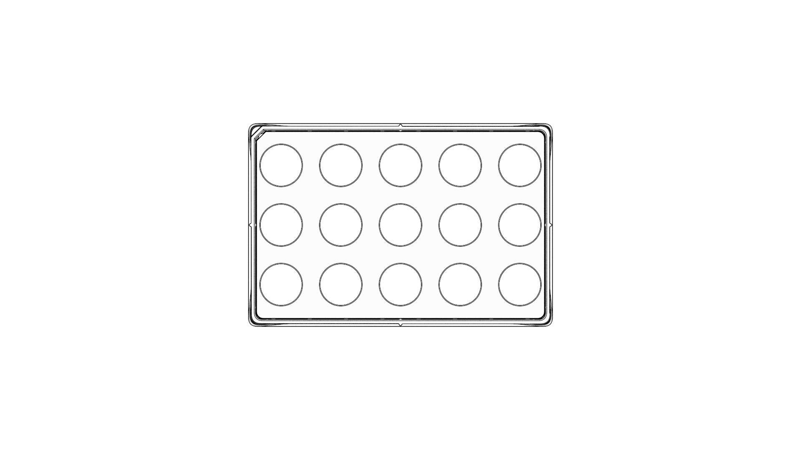 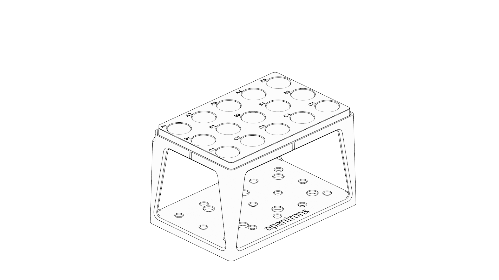
opentrons-tuberack-50ml¶
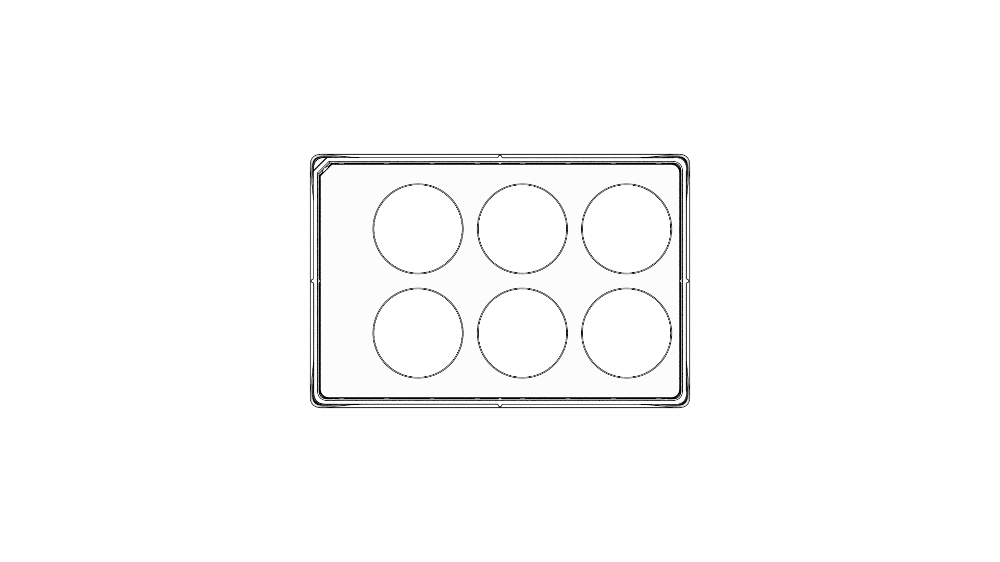 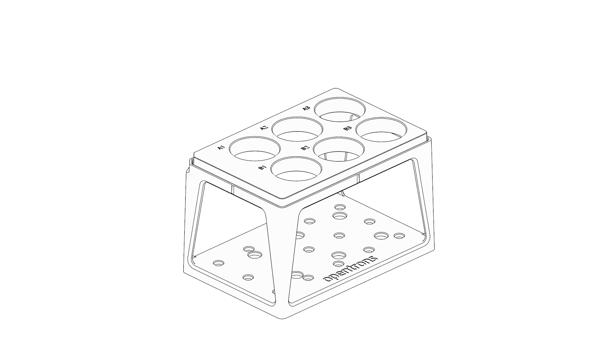
opentrons-tuberack-15_50ml¶
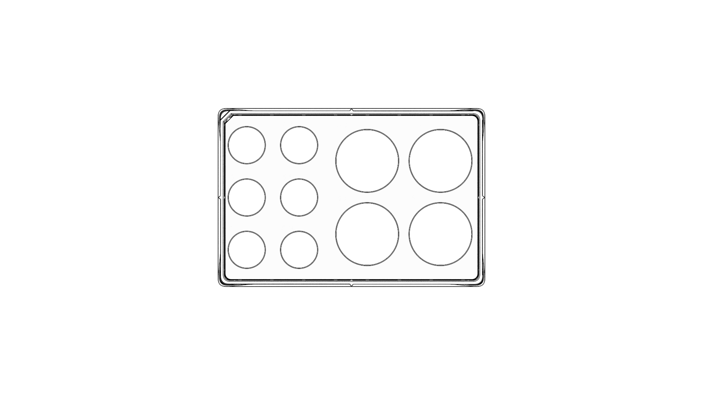 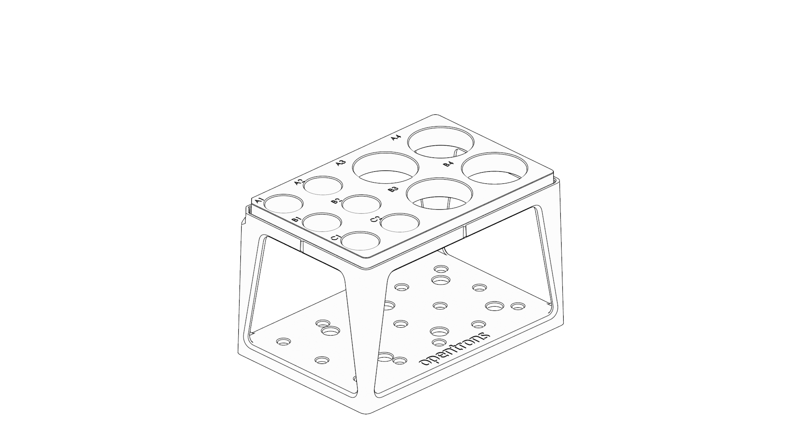
Point¶
Use point when there is only one position per labware, such as a scale.
my_container = labware.load('point', slot)
You can access the point position as my_labware.wells('A1') or my_labware.wells(0).
Tipracks¶
tiprack-10ul¶
Tip rack for a 10 uL pipette (single or 8-channel)
labware.load('tiprack-10ul', slot)
Accessing Tips: single channel ['A1']-['H12'], 8-channel ['A1']-['A12']
tiprack-200ul¶
Tip rack for a 200 or 300 uL pipette (single or 8-channel)
labware.load('tiprack-200ul', slot)
Accessing Tips: single channel ['A1']-['H12'], 8-channel ['A1']-['A12']
opentrons-tiprack-300ul¶
This is a custom-made 300ul tiprack for the OT 2 model (single or 8-channel)
labware.load('opentrons-tiprack-300ul', slot)
Accessing Tips: single channel ['A1']-['H12'], 8-channel ['A1']-['A12']
tiprack-1000ul¶
Tip rack for a 1000 uL pipette (single or 8-channel)
labware.load('tiprack-1000ul', slot)
Accessing Tips: single channel ['A1']-['H12'], 8-channel ['A1']-['A12']
tiprack-1000ul-chem¶
Tip rack for 1000ul chem (10x10)
labware.load('tiprack-1000ul-chem', slot)
Accessing Tips: single channel [0]-[99]
Troughs¶
trough-12row¶
12 row reservoir
labware.load('trough-12row', slot)
Accessing Rows: single channel or 8-channel ['A1']-['A12']
Tube Racks¶
tube-rack-.75ml¶
4x6 rack that holds .75 mL microcentrifuge tubes
labware.load('tube-rack-.75ml', slot)
Accessing Tubes: single channel ['A1']-['D6']
tube-rack-2ml¶
4x6 rack that holds 1.5 mL microcentrifuge tubes and 2 mL microcentrifuge tubes
labware.load('tube-rack-2ml', slot)
Accessing Tubes: single channel ['A1']-['D6']
tube-rack-15_50ml¶
rack that holds 6 15 mL tubes and 4 50 mL tubes
labware.load('tube-rack-15_50ml', slot)
Accessing Tubes: single channel ['A1']-['A3'], ['B1']-['B3'], ['C1']-['C2'], ['D1']-['D2']
Plates¶
96-deep-well¶
See dimensions in diagram below.
labware.load('96-deep-well', slot)
Accessing Wells: single channel ['A1']-['H12'], 8-channel ['A1']-['A12']
96-PCR-tall¶
See dimensions in diagram below.
labware.load('96-PCR-tall', slot)
Accessing Wells: single channel ['A1']-['H12'], 8-channel ['A1']-['A12']
96-PCR-flat¶
See dimensions in diagram below.
labware.load('96-PCR-flat', slot)
Accessing Wells: single channel ['A1']-['H12'], 8-channel ['A1']-['A12']
PCR-strip-tall¶
See dimensions in diagram below.
labware.load('PCR-strip-tall', slot)
Accessing Wells: single channel ['A1']-['A8'], 8-channel ['A1']
384-plate¶
See dimensions in diagram below.
labware.load('384-plate', slot)
Accessing Wells: single channel ['A1']-['P24'], multi-channel ['A1']-['A24]
Labware Module¶
'''
Examples in this section require the following
'''
from opentrons import labware
List¶
Once the labware module is loaded, you can see a list of all containers currently inside the API by calling labware.list()
labware.list()
Load¶
Labware is loaded with two arguments: 1) the labware type, and 2) the deck slot it will be placed in on the robot.
p = labware.load('96-flat', '1')
A third optional argument can be used to give a labware a unique name.
p = labware.load('96-flat', '2', 'any-name-you-want')
Unique names are useful in a few scenarios. First, they allow the labware to have independent calibration data from other labware in the same slot. In the example above, the container named ‘any-name-you-want’ will assume different calibration data from the unnamed plate, even though they are the same type and in the same slot.
Note
Calibration data refers to the saved positions for each labware on deck, and is a part of the Opentrons App calibration procedure.
Create¶
In addition to the default labware that come with the Opentrons API, you can create your own custom labware.
Through the API’s call labware.create(), you can create simple grid labware, which consist of circular wells arranged in columns and rows.
plate_name = '3x6_plate'
if plate_name not in labware.list():
custom_plate = labware.create(
plate_name, # name of you labware
grid=(3, 6), # specify amount of (columns, rows)
spacing=(12, 12), # distances (mm) between each (column, row)
diameter=5, # diameter (mm) of each well on the plate
depth=10, # depth (mm) of each well on the plate
volume=200)
When you create your custom labware it will return the custom plate. You should only need to run this once among all of your protocols for the same custom labware because the data is automatically saved on the robot.
In this example, the call to labware.create is wrapped in an if-block, so that it does not try to add the definition to a robot where this has already been run (which would cause an error). If a labware has already been added to the database (by previously calling labware.create, the if-block will not execute, and the rest of the protocol will use the definition that was already created and calibrated.
Note There is some specialty labware that will require you to specify the type within your labware name. If you are creating a custom tiprack, it must be tiprack-REST-OF-LABWARE-NAME in order for the program to act reliably.
If you would like to delete a labware you have already added to the database, you can do the following:
from opentrons.data_storage import database
database.delete_container('3x6_plate')
This allows you to make changes to the labware within the database under the same name.
for well in custom_plate.wells():
print(well)
will print out...
<Well A1>
<Well B1>
<Well C1>
<Well A2>
<Well B2>
<Well C2>
<Well A3>
<Well B3>
<Well C3>
<Well A4>
<Well B4>
<Well C4>
<Well A5>
<Well B5>
<Well C5>
<Well A6>
<Well B6>
<Well C6>
from opentrons import labware, robot
plate = labware.load('96-flat', 'A1')
Accessing Wells¶
Individual Wells¶
When writing a protocol using the API, you will be spending most of your time selecting which wells to transfer liquids to and from.
The OT-One deck and labware are all set up with the same coordinate system - lettered rows ['A']-['END'] and numbered columns ['1']-['END'].
'''
Examples in this section expect the following
'''
from opentrons import labware
plate = labware.load('96-flat', '1')
Wells by Name¶
Once a labware is loaded into your protocol, you can easily access the many wells within it using wells() method. wells() takes the name of the well as an argument, and will return the well at that location.
plate.wells('A1')
plate.wells('H12')
Wells by Index¶
Wells can be referenced by their “string” name, as demonstrated above. However, they can also be referenced with zero-indexing, with the first well in a labware being at position 0.
plate.wells(0) # well A1
plate.wells(95) # well H12
Columns and Rows¶
A labware’s wells are organized within a series of columns and rows, which are also labelled on standard labware. In the API, rows are given letter names ('A' through 'H' for example) and go left to right, while columns are given numbered names ('1' through '12' for example) and go from front to back.
You can access a specific row or column by using the rows() and columns() methods on a labware. These will return all wells within that row or column.
row = plate.rows('A')
column = plate.columns('1')
print('Column "1" has', len(column), 'wells')
print('Row "A" has', len(row), 'wells')
will print out...
Column "1" has 8 wells
Row "A" has 12 wells
The rows() or cols() methods can be used in combination with the wells() method to access wells within that row or column. In the example below, both lines refer to well 'A1'.
plate.cols('1').wells('A')
plate.rows('A').wells('1')
from opentrons import labware, robot
plate = labware.load('96-flat', '1')
Multiple Wells¶
If we had to reference each well one at a time, our protocols could get very very long.
When describing a liquid transfer, we can point to groups of wells for the liquid’s source and/or destination. Or, we can get a group of wells that we want to loop through.
'''
Examples in this section expect the following
'''
from opentrons import labware
plate = labware.load('96-flat', '2')
Wells¶
The wells() method can return a single well, or it can return a list of wells when multiple arguments are passed.
Here is an example or accessing a list of wells, each specified by name:
w = plate.wells('A1', 'B2', 'C3', 'H12')
print(w)
will print out...
<WellSeries: <Well A1><Well B2><Well C3><Well H12>>
Multiple wells can be treated just like a normal Python list, and can be iterated through:
for w in plate.wells('A1', 'B2', 'C3', 'H12'):
print(w)
will print out...
<Well A1>
<Well B2>
<Well C3>
<Well H12>
Wells To¶
Instead of having to list the name of every well, we can also create a range of wells with a start and end point. The first argument is the starting well, and the to= argument is the last well.
for w in plate.wells('A1', to='H1'):
print(w)
will print out...
<Well A1>
<Well B1>
<Well C1>
<Well D1>
<Well E1>
<Well F1>
<Well G1>
<Well H1>
These lists of wells can also move in the reverse direction along your labware. For example, setting the to= argument to a well that comes before the starting position is allowed:
for w in plate.wells('H1', to='A1'):
print(w)
will print out...
<Well H1>
<Well G1>
<Well F1>
<Well E1>
<Well C1>
<Well B1>
<Well A1>
Wells Length¶
Another way you can create a list of wells is by specifying the length= of the well list you need, in addition to the starting point. The example below will return eight wells, starting at well 'A1':
for w in plate.wells('A1', length=8):
print(w)
will print out...
<Well A1>
<Well B1>
<Well C1>
<Well D1>
<Well E1>
<Well F1>
<Well G1>
<Well H1>
Columns and Rows¶
Columns and Rows
The same arguments described above can be used with rows() and cols() to create lists of rows or columns.
Here is an example of iterating through rows:
for r in plate.rows('A', length=3):
print(r)
will print out...
- <WellSeries:
- <WellSeries: <Well A1><Well A2><Well A3><Well A4><Well A5><Well A6><Well A7><Well A8><Well A9><Well A10><Well A11><Well A12>> <WellSeries: <Well B1><Well B2><Well B3><Well B4><Well B5><Well B6><Well B7><Well B8><Well B9><Well B10><Well B11><Well B12>> <WellSeries: <Well C1><Well C2><Well C3><Well C4><Well C5><Well C6><Well C7><Well C8><Well C9><Well C10><Well C11><Well C12>>
>
And here is an example of iterating through columns:
for c in plate.cols('1', to='10'):
print(c)
will print out...
- <WellSeries:
- <WellSeries: <Well A1><Well B1><Well C1><Well D1><Well E1><Well F1><Well G1><Well H1>> <WellSeries: <Well A2><Well B2><Well C2><Well D2><Well E2><Well F2><Well G2><Well H2>> <WellSeries: <Well A3><Well B3><Well C3><Well D3><Well E3><Well F3><Well G3><Well H3>> <WellSeries: <Well A4><Well B4><Well C4><Well D4><Well E4><Well F4><Well G4><Well H4>> <WellSeries: <Well A5><Well B5><Well C5><Well D5><Well E5><Well F5><Well G5><Well H5>> <WellSeries: <Well A6><Well B6><Well C6><Well D6><Well E6><Well F6><Well G6><Well H6>> <WellSeries: <Well A7><Well B7><Well C7><Well D7><Well E7><Well F7><Well G7><Well H7>> <WellSeries: <Well A8><Well B8><Well C8><Well D8><Well E8><Well F8><Well G8><Well H8>> <WellSeries: <Well A9><Well B9><Well C9><Well D9><Well E9><Well F9><Well G9><Well H9>> <WellSeries: <Well A10><Well B10><Well C10><Well D10><Well E10><Well F10><Well G10><Well H10>>
>
Slices¶
Labware can also be treating similarly to Python lists, and can therefore handle slices.
for w in plate[0:8:2]:
print(w)
will print out...
<Well A1>
<Well C1>
<Well E1>
<Well G1>
The API’s labware are also prepared to take string values for the slice’s start and stop positions.
for w in plate['A1':'A2':2]:
print(w)
will print out...
<Well A1>
<Well C1>
<Well E1>
<Well G1>
for w in plate.rows['B']['1'::2]:
print(w)
will print out...
<Well B1>
<Well B3>
<Well B5>
<Well B7>
<Well B9>
<Well B11>